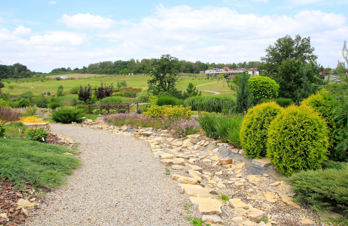
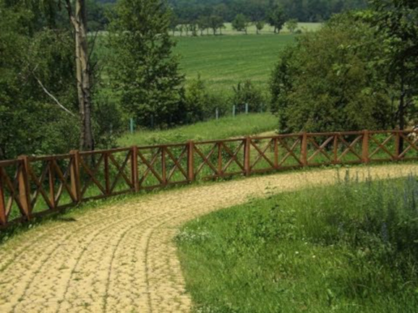

Działalność
Ogród nauki
W zakresie realizacji głównego celu jakim jest ochrona różnorodności biologicznej priorytetami są:
- stworzenie maksymalnie dużej różnorodności siedlisk;
- wprowadzanie maksymalnie dużej różnorodności roślin;
- zachowanie zdolności populacji roślin do rozmnażania generatywnego.
Śląski Ogród Botaniczny prowadzi działalność w zakresie badań naukowych. We wskazanym zakresie wyróżnić należy następujące działania: diagnoza przyczyn zanikania różnorodności biologicznej;
- gromadzenie danych środowiskowych;
- modelowanie zmian środowiskowych;
- opracowywanie aplikacji.
Ogród kształcenia
Podstawowymi założeniami działalności Ogrodu są:
- Praca z dziećmi, młodzieżą i innymi osobami zainteresowanymi ochroną środowiska naturalnego;
- Organizacja warsztatów, które prowadzone są przez najlepszych specjalistów w ramach danych dziedzin;
- Proponowanie edukacji mającej charakter uzupełniający lub alternatywny w stosunku do tradycyjnych form edukacji szkolnej.

Ogród kolekcji
Pracownie Kolekcji Roślin Ozdobnych, Kolekcji Naukowych i Zachowawczych oraz Kolekcji Siedliskowych realizują jedno z głównych statutowych zadań Ślaskiego Ogrodu Botanicznego jakim jest prowadzenie działalności zgodnie z Decyzją Ministra Środowiska z dnia 7 lutego 2006 r. dotyczącą m.in. uprawy roślin wybranych gatunków oraz ochrony różnorodności biologicznej.
Ogród kultury
Śląski Ogród Botaniczny będąc przestrzenią otwartą na urzeczywistnianie idei zrównoważonego rozwoju Śląska, planuje udostępnienie swoich terenów dla działań kulturalnych różnego typu. Widzi możliwość organizowania na swoim terenie plenerów artystycznych, wystaw, festynów rodzinnych oraz koncertów. Do współpracy są zapraszane instytucje, organizacje oraz osoby prowadzące działania kulturalne. Działalność Ogrodu jest skierowana na różnorodne projekty, które łączyłyby realizację misji Śląskiego Ogrodu Botanicznego z prowadzeniem przedsięwzięć w dziedzinie szeroko pojętych działań kulturalnych.
Pracownia Struktury Roślin
Przy Śląskim Ogrodzie Botanicznym usytuowana jest Pracownia Struktury Roślin powołana przez Ogród Botaniczny – Centrum Zachowania Różnorodności Biologicznej Polskiej Akademii Nauk (Ogród Botaniczny w Warszawie-Powsinie). Wiodącym tematem badawczym Pracowni jest wzrost promieniowy, w tym aktywność i mechanizmy funkcjonowania kambium, i procesy rozwojowe drzew. Rezultaty prac zespołu publikowane są w renomowanych międzynarodowych czasopismach.
